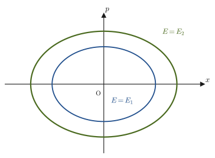
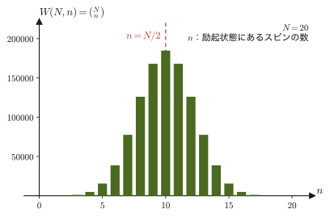

第48章微視的状態と等重率の原理 — ミクロカノニカル分布
コインを1枚投げれば表か裏か，サイコロを1個振れば1から6のどれかの目が出る．では，コインを$100$枚同時に投げたら，「表が$50$枚，裏が$50$枚」という結果と，「表が$100$枚，裏が$0$枚」という結果とでは，どちらが起こりやすいだろうか．直感的には前者だと誰もが答えるはずだが，その理由を「何通りの投げ方があるか」を数えることで正確に説明できることに気づいている人は少ない．気体の入った箱を考えるときも，まったく同じ発想が使える——気体分子のひとつひとつがどこにいて，どんな速度をもっているかという詳細（微視的状態）は膨大な数にのぼるが，圧力や温度のような測定できる量（巨視的状態）は，そのうち圧倒的多数の微視的状態に共通する「平均的なふるまい」にすぎない．
本章では，力学（第I部）で学んだ位置と運動量の組が作る空間——位相空間（第45・46章）——を舞台に，1つの微視的状態を位相空間の1点として数える方法を導入し，「圧倒的多数の微視的状態が実現するとき，巨視的状態はどう見えるか」という統計力学の基本的な考え方の土台を作る．そのために，まず「エルゴード仮説」と「等重率の原理」という2つの仮定（証明ではなく，実験事実と矛盾しないことが確かめられている出発点）を導入し，孤立した系を記述する最初の確率分布——ミクロカノニカル分布——を定義する．最後に，2準位スピン系・アインシュタイン固体・理想気体という3つの具体例で，実際に微視的状態を数える練習をする．
- 微視的状態と巨視的状態の違いを，コイン・サイコロの数え上げを通じて理解する
- 古典力学の位相空間 $\{x\},\{p\}$ の上に微視的状態を定義し，量子力学からの事実として位相空間が体積 $h^{3N}$ のセルに区切られること，同種粒子の入れ替えを重複と数えないための $1/N!$ を理解する
- エルゴード仮説（時間平均＝位相平均）の主張とその限界を理解する
- 等重率の原理（孤立系ではすべての許された微視的状態が等確率で実現するという仮定）とミクロカノニカル分布を定義する
- 2準位スピン系・アインシュタイン固体・理想気体について，状態数を実際に数え上げる／計算する
- エネルギー殻 $[E,E+\Delta E]$ の状態数 $W$ と，エネルギー $E$ 以下の状態数 $\Omega(E)$ の関係を理解する
もとにしたノート：望月泰英『物理学ノート 統計力学』 pp. 5–6．
48.1 微視的状態と巨視的状態
コインを$4$枚同時に投げる実験を考えよう．それぞれのコインを区別できるように，$1$番から$4$番までの通し番号をつけておく．このとき「どのコインが表でどのコインが裏か」まで完全に指定した結果——たとえば「$1$番と$3$番が表，$2$番と$4$番が裏」——を，本章では微視的状態（microstate）と呼ぶことにする．一方，「表が何枚出たか」という，個々のコインの区別を無視した粗い情報——たとえば「表が$2$枚」——を巨視的状態（macrostate）と呼ぶ．表1枚1枚の並び方（微視的状態）は $2^4=16$ 通りあるが，「表が$2$枚」という巨視的状態に対応する微視的状態（並び方）はそのうち$6$通りしかない——後で例題48.1で確かめる．
気体分子の集まりについても，まったく同じ区別が意味をもつ．気体分子1個1個の位置と速度をすべて指定した状態が微視的状態であり，圧力・体積・温度のように，実験室で温度計や圧力計を使って測定できる少数の量の組が巨視的状態である．気体分子は $1\ \mathrm{mol}$ あたり $N_{\mathrm A}\approx6.02\times10^{23}$ 個もあるので，微視的状態を1つ1つ具体的に書き下すことはできない．しかし，コインの例と同じように「ある巨視的状態に対応する微視的状態が何通りあるか」を数える——あるいは，連続的な量なら「体積」として測る——ことは可能であり，それこそが統計力学の中心的な仕事になる．
定義48.1 微視的状態と巨視的状態
微視的状態（microstate）とは，系を構成するすべての要素（コインなら1枚1枚，気体なら分子1個1個）について，その状態を完全に指定したものをいう．巨視的状態（macrostate）とは，個々の要素の詳細を無視し，全体としての少数の量（表の枚数，圧力・体積・温度など，実験で測定できる量）だけで指定した，より粗い記述をいう．1つの巨視的状態には，一般に多数の微視的状態が対応する．ある巨視的状態に対応する微視的状態の数を状態数と呼ぶ（状態数を表す記号 $\Omega$，$W$ は，何を数えるのかに応じて48.4〜48.6節で使い分ける）．
例題48.1 コイン4枚の微視的状態と巨視的状態
区別できるコイン$4$枚（$1$番〜$4$番）を同時に投げる．表の枚数 $n$（$n=0,1,2,3,4$）を巨視的状態とするとき，それぞれの巨視的状態に対応する微視的状態（表裏の並び方）の数を求めよ．また，全微視的状態の数と一致することを確かめよ．
解答 $4$枚のコインそれぞれについて表・裏の$2$通りがあり，コインは区別できるので，微視的状態（並び方）の総数は積の法則より $2^4=16$ 通りである．表がちょうど $n$ 枚である微視的状態の数は，$4$枚のうちどの$n$枚が表になるかを選ぶ場合の数，すなわち二項係数（大学数学 第13章 13.5の組合せ $_n\mathrm{C}_r$ のこと．本書では $\binom{4}{n}={}_4\mathrm{C}_n$ と書く）
$$ \binom{4}{n}=\frac{4!}{n!\,(4-n)!} $$で与えられる．具体的に計算すると，
$$ \binom{4}{0}=1,\quad \binom{4}{1}=4,\quad \binom{4}{2}=6,\quad \binom{4}{3}=4,\quad \binom{4}{4}=1 $$である．これらの和は，二項定理 $\displaystyle\sum_{n=0}^{4}\binom{4}{n}=(1+1)^4=2^4=16$ より，たしかに全微視的状態の数 $16$ と一致する．表2枚という巨視的状態（$n=2$）には，$1$-$2$，$1$-$3$，$1$-$4$，$2$-$3$，$2$-$4$，$3$-$4$ の$6$通りの微視的状態（どの$2$枚が表か）が対応しており，これは「表$0$枚」や「表$4$枚」（各$1$通りしかない）に比べて圧倒的に実現しやすい巨視的状態であることが分かる．
例題48.2 サイコロ2個の目の和 — 巨視的状態ごとの微視的状態の数
区別できるサイコロ2個（赤と青）を同時に振る．2個の目の和を巨視的状態，（赤の目，青の目）の組を微視的状態とするとき，和が $2,3,\dots,12$ のそれぞれに，何通りの微視的状態が対応するか．最も実現しやすい和はいくつか．
解答 赤の目 $a$ と青の目 $b$ は，それぞれ $1$〜$6$ の$6$通りなので，微視的状態の総数は積の法則より $6\times6=36$ 通りである．和が $s$ になる微視的状態は，$a+b=s$ を満たす $(a,b)$ の個数で，たとえば和が $7$ なら
$$ (1,6),\ (2,5),\ (3,4),\ (4,3),\ (5,2),\ (6,1) $$の$6$通り，和が $2$ なら $(1,1)$ の$1$通りだけである．一般に，$s\le7$ なら $a=1,2,\dots,s-1$ の $s-1$ 通り，$s\ge7$ なら $13-s$ 通りとなる（$b=s-a$ が $1$〜$6$ に収まる $a$ の個数を数えた）．全部まとめると，次の表になる．
| 和 $s$ | $2$ | $3$ | $4$ | $5$ | $6$ | $7$ | $8$ | $9$ | $10$ | $11$ | $12$ |
|---|---|---|---|---|---|---|---|---|---|---|---|
| 微視的状態の数 | $1$ | $2$ | $3$ | $4$ | $5$ | $6$ | $5$ | $4$ | $3$ | $2$ | $1$ |
合計は $1+2+3+4+5+6+5+4+3+2+1=36$ で，全微視的状態の数と一致する．最も実現しやすい和は，対応する微視的状態が最も多い $s=7$（$6$通り）であり，36通りの微視的状態がどれも同じ割合で起こるなら，和が$7$になる確率は $6/36=1/6$，和が$2$や$12$になる確率は $1/36$ である．コイン4枚の例題48.1と同じく，「中ほどの巨視的状態に対応する微視的状態が多い」ことがここでも見える．
イメージ：なぜ「よく起こる巨視的状態」があるのか
コイン$4$枚では「表$2$枚」に対応する微視的状態が$6$通りと最も多く，「表$0$枚」「表$4$枚」はそれぞれ$1$通りしかない．コインの枚数を$100$枚，$1000$枚と増やしていくと，この偏りはますます極端になり，「表がほぼ半分」という巨視的状態に対応する微視的状態の数が，全体（$2^{100}$ など）のほとんどを占めるようになる（コイン100枚の場合は次の例題48.3で実際に数え，$N$枚の一般の場合は48.5節で2準位系として確かめる）．気体分子が「ほぼ均一に部屋いっぱいに広がった状態」で見つかりやすく，「すべての分子が部屋の片隅に偏って集まった状態」がほとんど観測されないのも，同じ理由——後者に対応する微視的状態の数が，前者に比べて桁違いに少ないから——による．この「圧倒的多数の微視的状態がどの巨視的状態に集中しているか」という考え方が，統計力学がエントロピーや熱平衡を理解する土台になる．
例題48.3 コイン100枚 — 表が50枚と表が100枚はどちらが起こりやすいか
区別できるコイン100枚を同時に投げる．(1) 全微視的状態の数，(2) 表がちょうど50枚（裏も50枚）になる微視的状態の数，(3) 表が100枚になる微視的状態の数を求め，(2)の割合と(3)の割合を比べよ．
解答 (1) 各コインに表・裏の$2$通りがあるので，全微視的状態の数は $2^{100}\approx1.27\times10^{30}$ である．(2) 100枚のうち，どの50枚が表になるかを選ぶ場合の数は
$$ \binom{100}{50}=\frac{100!}{50!\,50!}\approx1.01\times10^{29} $$である．したがって，「表がちょうど50枚」の割合は
$$ \frac{\binom{100}{50}}{2^{100}}\approx\frac{1.01\times10^{29}}{1.27\times10^{30}}\approx0.080 $$すなわち約 $8.0\%$ である．(3) 表が100枚になる並び方は「全部表」の$1$通りだけなので，割合は $1/2^{100}\approx7.9\times10^{-31}$ にすぎない．(2)と(3)の微視的状態の数の比は $1.01\times10^{29}$ 倍であり，「表50枚」のほうが $10^{29}$ 倍も起こりやすい．なお，ちょうど50枚の確率が約 $8\%$ にとどまるのは，$41$ 枚や $52$ 枚のような近くの巨視的状態にも確率が分散するためで，表の枚数が $40$〜$60$ 枚に収まる確率まで数えると約 $96\%$ になる．このように，$N$ を大きくすると，$N/2$ の近くの巨視的状態に微視的状態のほとんどが集中する（48.5節で，この集中がどれほど鋭くなるかを見る）．
48.2 古典力学の位相空間 — 微視的状態を数える
コインの微視的状態は「表か裏か」という有限個の選択肢だったが，力学の系（質点，気体分子など）の微視的状態は，連続的に変化する量——位置と運動量——で指定される．そこで，まず力学ですでに導入した位相空間（第45章 45.5節）を思い出そう．自由度$1$の系（たとえば，壁とばねでつながれた質点1個の1次元運動）では，時刻$t$での状態は位置$x(t)$と運動量$p(t)=m\dot x(t)$の組 $(x,p)$，すなわち$x$-$p$平面（位相空間）上の1点として表される．運動方程式にしたがって時間発展すると，この点は平面上を1本の曲線（相軌道）を描きながら動く．
定義48.2 位相空間
自由度 $f$ の力学系について，一般化座標 $q_1,\dots,q_f$ と一般化運動量 $p_1,\dots,p_f$ を軸とする $2f$ 次元の空間を位相空間（phase space）と呼ぶ．系の1つの状態（すべての座標・運動量の値の組）は，位相空間上の1点に対応する．これは第45章でハミルトン形式を導入したときにすでに用いた考え方であり，本章ではこれを「微視的状態を数える」という目的のために使う．
たとえば，質量 $m$，ばね定数 $k$ の1次元調和振動子（第7章）のハミルトニアンは $H=p^2/(2m)+\frac12kx^2$（第45章 45.3節）であり，エネルギーが一定値 $E$ に保たれる（孤立系である）とき，位相空間上でエネルギー一定の点の集まりは，方程式 $p^2/(2m)+\frac12kx^2=E$ を満たす曲線，すなわち図48.1のような楕円になる．エネルギー $E$ が大きいほど，この楕円は大きくなる——「エネルギーが大きい系ほど，位相空間の中でより広い領域を占める」という，本章で繰り返し使う考え方の最も単純な例である．

気体のように莫大な数の分子からなる系では，位相空間の次元がとてつもなく大きくなる．$n\ \mathrm{mol}$の単原子分子理想気体が体積 $V$ の箱に入っているとする．分子は $N=nN_{\mathrm A}$ 個あり（$N_{\mathrm A}$ はアボガドロ定数），それぞれの分子 $i=1,\dots,N$ は3次元空間内の位置 $\bm{r}_i=(x_i,y_i,z_i)$ と運動量 $\bm{p}_i=(p_{ix},p_{iy},p_{iz})$ をもつ．全分子の位置と運動量をまとめて
$$ \{x\}=(x_1,y_1,z_1,x_2,\dots,z_N),\qquad \{p\}=(p_{1x},p_{1y},p_{1z},p_{2x},\dots,p_{Nz}) $$と書く（それぞれ $3N$ 個の実数の組）．この気体の1つの微視的状態は，$N$個の分子すべての位置と運動量をひとまとめにした位相空間——次元は $2\times3N=6N$——の1点に対応する．$1\ \mathrm{mol}$なら $N\approx6.02\times10^{23}$ なので，$6N$ は$10^{24}$のオーダーという，想像を絶する巨大な数になる（例題48.6で具体的に確認する）．次元をこれ以上図に描くことはできないが，「各分子について $x,y,z,p_x,p_y,p_z$ の6個の数が必要」という規則そのものは，分子が1個でも$N$個でも変わらない——次元が増えても発想は同じである．
次元がどう増えていくかを，粒子の数と空間の次元を変えながら表にまとめておこう．
| 系 | 位置の成分 | 運動量の成分 | 位相空間の次元 |
|---|---|---|---|
| 1粒子・1次元 | $x$ | $p_x$ | $2$ |
| 1粒子・3次元 | $x,y,z$ | $p_x,p_y,p_z$ | $6$ |
| 2粒子・3次元 | $x_1,y_1,z_1,x_2,y_2,z_2$ | $p_{1x},\dots,p_{2z}$ | $12$ |
| $N$粒子・3次元 | $3N$個 | $3N$個 | $6N$ |
粒子を1個増やすごとに，位置3個・運動量3個の合計6次元ずつ増えていく．ただそれだけの規則である．
この位相空間の微小体積要素を $\dd\{x\}=\dd x_1\dd y_1\dd z_1\cdots\dd z_N$，$\dd\{p\}=\dd p_{1x}\dd p_{1y}\dd p_{1z}\cdots\dd p_{Nz}$（それぞれ $3N$ 重の積分の被積分部分，大学数学 第7章 7.1の重積分の考え方をそのまま$3N$変数に拡張したもの）と書けば，素朴には，この微小体積要素の中に
\begin{equation} \dd\Omega=\dd\{x\}\,\dd\{p\} \label{eq:48-domega-classical} \end{equation}個の微視的状態があると考えられる——位相空間の「体積」がそのまま「微視的状態の数」に比例する，という素朴な数え方である（ただし，$\dd\{x\}\,\dd\{p\}$ は「長さ×運動量」の $3N$ 乗の次元をもつ量であり，本当の個数（無次元の数）にはまだなっていない．$h^{3N}$ で割ると無次元の数になる．下で見る）．
注意：なぜ位相空間はこのままでは「数えられない」のか
式 \eqref{eq:48-domega-classical} は，位置と運動量が連続的な実数値をとるという古典力学の立場に立てば自然な式だが，これでは微小体積要素の中に「無限個」の点（微視的状態）が詰まっていることになり，$\Omega$ を有限な整数として数えることができない．また，$\dd\{x\}\,\dd\{p\}$ は次元をもつ量（単位は $(\mathrm{J\,s})^{3N}$）であり，「個数」（無次元の数）ではない．
量子力学によれば，位置 $x$ と運動量 $p$ は同時にはいくらでも正確には決められず，必ずゆらぎ $\Delta x,\Delta p$ をもつことが知られている（ハイゼンベルグ（Heisenberg）の不確定性原理）．ハイゼンベルグは思考実験から，ゆらぎの積が $h$ 程度より小さくならないという見積り
$$ \Delta x\,\Delta p\sim h $$を与えた（$h$ はプランク定数，$h=6.626\,070\,15\times10^{-34}\ \mathrm{J\,s}$，定義値）．正確な不等式は $\Delta x\,\Delta p\ge\hbar/2$（$\hbar=h/(2\pi)$．「エイチバー」と読み，換算プランク定数という）である．いずれも，「$x$-$p$平面上で面積が $h$ 程度より小さい領域は，これ以上細かく区別できない」ということの目安であって，$h$ という値がちょうど出てくる理由までは，この見積りだけからは分からない．量子力学で状態を正確に数え上げると（たとえば，箱の中の粒子の定在波や，調和振動子のエネルギー準位を数えると），$x$-$p$平面の面積 $h$ あたりちょうど1つの量子状態がある，ということが知られている（例題48.4で調和振動子について確かめる）．本教材は量子力学そのものは扱わないので，この結果を事実として受け入れることにする．
この事実を，$6N$次元の位相空間全体に適用しよう．「面積 $h$ あたり1状態」は，位置と運動量のペア1組（$x,y,z$のうちの1方向と，対応する運動量成分）についての関係であり，$h$ は「長さ$\times$運動量」という次元をもつ．$1$個の分子について，$x,y,z$の3方向それぞれに1つの位置成分と運動量成分のペアがあるので，1分子あたりの位相空間（6次元）の1つの微視的状態が占めるセルの体積は $h\times h\times h=h^3$ になる．$N$個の分子があれば，同様の議論を$N$回繰り返すことになるので，$6N$次元位相空間全体で1つの微視的状態が占めるセルの体積は
\begin{equation} h^3\times h^3\times\cdots\times h^3=h^{3N} \label{eq:48-cell-volume} \end{equation}（$h^3$ を$N$回掛けたもの）になる．つまり，$6N$次元の位相空間は，体積 $h^{3N}$ の小さなセル（枡目）に区切られており，1つのセルの内部にある無数の（古典力学的には別々の）点は，量子力学的にはすべて同じ1つの微視的状態とみなされる．
したがって，量子化された位相空間の微小体積要素の中にある微視的状態の数は，式 \eqref{eq:48-domega-classical} の素朴な体積を，式 \eqref{eq:48-cell-volume} のセル1つの体積 $h^{3N}$ で割ったもの，
$$ \dd\Omega=\frac{\dd\{x\}\,\dd\{p\}}{h^{3N}} $$になる．次元を確かめておこう：$[\dd x\,\dd p]=\mathrm{m}\cdot\mathrm{kg\,m/s}=\mathrm{kg\,m^2/s}=\mathrm{J\,s}$（$\mathrm{J}=\mathrm{kg\,m^2/s^2}$ を使った）であり，これは $h$ の単位 $\mathrm{J\,s}$ と一致する．だから $\dd x\,\dd p/h$ は無次元の数であり，本当の個数として意味をもつ．
例題48.4 調和振動子の位相空間の面積とセルの数
質量 $m$，角振動数 $\omega$ の1次元調和振動子（ハミルトニアン $H=\dfrac{p^2}{2m}+\dfrac12m\omega^2x^2$）について，(1) エネルギーが $E$ 以下の状態が $x$-$p$平面につくる領域の面積 $S(E)$ を求めよ．(2) $S(E)$ を $h$ で割った「セルの個数」を求め，量子力学が与えるエネルギー準位 $E_n=\left(n+\tfrac12\right)\hbar\omega$（$n=0,1,2,\dots$）のうち $E$ 以下のものの個数と比べよ．
解答 (1) $H\le E$ を変形すると，
$$ \frac{x^2}{2E/(m\omega^2)}+\frac{p^2}{2mE}\le1 $$となり，これは $x$ 方向の半軸 $a=\sqrt{2E/(m\omega^2)}$，$p$ 方向の半軸 $b=\sqrt{2mE}$ の楕円の内部である．楕円の面積は $\pi ab$ なので，
$$ S(E)=\pi ab=\pi\sqrt{\frac{2E}{m\omega^2}\cdot2mE}=\pi\sqrt{\frac{4E^2}{\omega^2}}=\frac{2\pi E}{\omega} $$である（$\sqrt{4E^2/\omega^2}=2E/\omega$）．(2) $\hbar=h/(2\pi)$ より $h=2\pi\hbar$ なので，セルの個数は
$$ \frac{S(E)}{h}=\frac{2\pi E/\omega}{2\pi\hbar}=\frac{E}{\hbar\omega} $$となる．一方，$E_n=\left(n+\frac12\right)\hbar\omega\le E$ を満たす $n$ は $n\le E/(\hbar\omega)-\frac12$ なので，$E\gg\hbar\omega$ のとき，その個数はほぼ $E/(\hbar\omega)$ である．2つの数え方が一致する——つまり，位相空間の面積 $h$ ごとに量子状態が1つ，というセルの大きさ $h$ が，量子力学の準位の数え上げと合っている．
例題48.5 1分子の最小セルの見積り
質量 $m=6.6\times10^{-26}\ \mathrm{kg}$（アルゴン原子1個程度）の分子について，位置のゆらぎが (a) $\Delta x=1.0\times10^{-10}\ \mathrm{m}$（原子の大きさ程度），(b) $\Delta x=0.10\ \mathrm{m}$（容器の大きさ程度）のとき，$\Delta x\,\Delta p\sim h$ から運動量のゆらぎ $\Delta p$ と，速度のゆらぎ $\Delta v=\Delta p/m$ を見積もれ．また，$3$次元の1分子の位相空間の最小セルの体積 $h^3$ を求めよ．
解答 $\Delta p\sim h/\Delta x$ に $h=6.626\times10^{-34}\ \mathrm{J\,s}$ を代入する．(a) $\Delta p\sim6.626\times10^{-34}/(1.0\times10^{-10})=6.6\times10^{-24}\ \mathrm{kg\,m/s}$，速度に直すと $\Delta v=\Delta p/m\sim6.6\times10^{-24}/(6.6\times10^{-26})=1.0\times10^{2}\ \mathrm{m/s}$ である．(b) $\Delta p\sim6.626\times10^{-34}/0.10=6.6\times10^{-33}\ \mathrm{kg\,m/s}$，$\Delta v\sim1.0\times10^{-7}\ \mathrm{m/s}$ となる．位置を細かく指定するほど運動量の指定はあらくなり，容器全体のように位置をあらく指定すると運動量はきわめて細かく区別できる．どちらの場合も，位相空間で1つの微視的状態が占めるセルの体積は，1方向あたり $\Delta x\,\Delta p\sim h$ で決まっているので，$3$次元の1分子では
$$ h^3=(6.626\times10^{-34}\ \mathrm{J\,s})^3\approx2.9\times10^{-100}\ \mathrm{J^3\,s^3} $$と，とてつもなく小さい．だから，日常的な大きさの容器の中の気体では，区別できるセルの数が桁違いに多くなる（例題48.12で，$1$分子だけで $10^{30}$ 個ほどのセルがあることを確かめる）．
さて，これだけではまだ足りない．気体分子はすべて同じ種類の粒子（たとえば同じヘリウム原子）であり，量子力学的に「区別できない」——分子1番と分子2番を入れ替えても，物理的にはまったく同じ状態である．ところが，$\{x\},\{p\}$ の書き方では，分子番号を明示的に使ってしまっているので，分子1番と2番を入れ替えただけの2つの点を，異なる微視的状態として重複して数えてしまっている．
イメージ：同種粒子の入れ替えを重複と数えない
身近な例で考えよう．机の上に，色も形もまったく同じコインが2枚ある．これを「1番のコインは左，2番のコインは右」という置き方と，「2番のコインは左，1番のコインは右」という置き方は，コインに（見た目には存在しない）通し番号をつけて考えれば別の並べ方だが，実際に机の上のコインを眺めている人には，どちらも「左に1枚，右に1枚」という区別のつかない同じ状況にしか見えない．気体分子も同様で，同じ種類の分子どうしを入れ替えても，実験で観測できる状態は変わらない．$N$個の同種粒子の並べ替え（順列）は $N!$ 通りあるので，「区別できる」という前提で数えた微視的状態の数を，あとから $N!$ で割ってやれば，「区別できない」という正しい数え方に直すことができる．
定義48.3 量子化された位相空間の体積要素
$N$個の同種粒子からなる系について，位相空間の微小体積要素 $\dd\{x\}\,\dd\{p\}$ の中に含まれる（量子力学的に区別できる，かつ同種粒子の入れ替えを重複と数えない）微視的状態の数を
\begin{equation} \dd\Omega=\frac{\dd\{x\}\,\dd\{p\}}{N!\,h^{3N}} \label{eq:48-domega-quantum} \end{equation}と定義する．分母の $h^{3N}$ は量子力学による位相空間の区切り（セル1つあたりの体積），$N!$ は$N$個の同種粒子の入れ替えを重複と数えないための因子である．
例題48.6 $1\ \mathrm{mol}$の気体の位相空間の次元
$1\ \mathrm{mol}$（$N=N_{\mathrm A}\approx6.02\times10^{23}$個）の単原子分子気体について，位相空間の次元 $6N$ を具体的な数値として書き下せ．また，位置だけ，運動量だけの次元もそれぞれ求めよ．
解答 分子1個あたり，位置3次元・運動量3次元の合計6次元の座標が必要なので，$N$個では位置が $3N$ 次元，運動量が $3N$ 次元，合計で位相空間の次元は
$$ 6N=6\times6.02\times10^{23}\approx3.6\times10^{24} $$である．位置だけの空間（配置空間）の次元は $3N\approx1.8\times10^{24}$，運動量だけの空間の次元も同じく $3N\approx1.8\times10^{24}$ である．これがどれほど大きい数かを実感するために，1秒に1次元ずつ数えていくと仮定してみよう．$6N\approx3.6\times10^{24}$ 次元を数え終えるのに $3.6\times10^{24}\ \mathrm{s}$ かかり，1年を約 $3.16\times10^{7}\ \mathrm{s}$ とすると $3.6\times10^{24}/(3.16\times10^{7})\approx1.1\times10^{17}$ 年，これは宇宙の年齢（約138億年）の約 $8\times10^{6}$ 倍である．$1\ \mathrm{mol}$という日常的な量の気体でさえ，その位相空間はまったく直接には描けない超高次元の空間であることが分かる．
例題48.7 同種粒子2個の数え方 — $N!$の意味を確かめる
1次元の箱の中に，同じ種類の粒子が2個ある．位相空間（$x$-$p$平面）は面積 $h$ のセルに区切られており，セルはたくさんあるとする．(1) 2個の粒子が異なるセルA，Bに1個ずつ入っているとき，粒子が区別できると考えた場合と，区別できない（同種粒子である）と考えた場合とで，微視的状態の数がどう変わるか答えよ．(2) 2個の粒子がどちらも同じセルCに入っている場合はどうなるか論じよ．
解答 (1) 区別できる場合，「粒子1がセルA・粒子2がセルB」と「粒子1がセルB・粒子2がセルA」は異なる並べ方として数えられるので，微視的状態の数は $2!=2$ 通りである．区別できない場合，2個の粒子を入れ替えても物理的には同じ状態（「セルAとセルBに1個ずつ」という状況そのものは変わらない）なので，微視的状態の数は $1$ 通りである．たしかに，区別できる場合の数 $2$ を $N!=2!=2$ で割ると，区別できない場合の数 $1$ に一致する．
(2) 2個とも同じセルCにいる場合は，区別できる立場で数えても「粒子1も2もセルC」という並べ方は入れ替えても変化しないので最初から $1$ 通りしかなく，区別できない立場で数えても $1$ 通りである．この場合に $2!$ で割ってしまうと $1/2$ 通りという不合理な数になる．しかし，気体のように粒子の数 $N$ に対してセルの数が桁違いに多い状況では，2個以上の粒子が同じセルに入る配置は，異なるセルに入る配置に比べて無視できるほど少ない（例題48.12で見るように，$1$分子だけでもセルは $10^{30}$ 個ほどある）．だから，「区別できる場合の数を $N!$ で割る」という数え方は，よい近似になる．
$1/N!$ という因子が最終的にエントロピーの計算にどう影響するか（ギブスのパラドックス）は，第49章 49.7節で詳しく扱う．
最後に，「エネルギーが大きい系ほど微視的状態の数が多い」という，図48.1の楕円ですでに見た性質を，気体分子の集まりについてもう一度，直感的な図で確認しておこう．分子の数 $N$ は同じまま，エネルギーだけを変えて比べる．
48.3 エルゴード仮説 — 時間平均と位相平均
ここまでで，気体のような多粒子系の微視的状態を「$6N$次元の量子化された位相空間の1点」として数える方法を準備した．しかし，実験室で温度計や圧力計を使って測定できるのは，個々の微視的状態ではなく，圧力・温度のような巨視的な量である．測定には必ず有限の時間がかかる一方，系の微視的状態は，分子の衝突などによって，測定にかかる時間よりもはるかに短い時間スケールで絶えず変化している——熱平衡にある系は，巨視的に見れば時間が経っても変化しないように見えるが，微視的に見れば，1つ1つの微視的状態は目にもとまらぬ速さで次々と入れ替わっているはずである．したがって，測定で得られる値は，本当は「測定にかかった時間の間に系がたどった，膨大な数の微視的状態にわたる平均」だと考えるのが自然である．
ところが，統計力学の理論では，実際に時間発展を追いかける代わりに，「同じ巨視的状態（同じ$E,V,N$など）に対応する，考えられる微視的状態をすべて集めた仮想的な集団（アンサンブル，ensemble．「集団」の意味）」を考え，その集団の中での平均（後述する位相平均）を計算する，という方針をとる．この2つの平均——実際の時間発展を追った時間平均と，ある瞬間に存在しうる微視的状態の集団について計算する位相平均——が等しいという主張が，統計力学の最も基本的な仮定の1つであるエルゴード仮説（ergodic hypothesis）である．
法則48.1 エルゴード仮説
熱平衡状態にある系について，物理量の時間平均と位相平均は等しい．
物理量 $A$ が，系の微視的状態 $l(t)$（時刻 $t$ における位相空間内の点）の関数として $A(l(t))$ と書けるとき，時間平均は，測定時間 $T$ を（理論上は）無限大まで長くとった極限として
\begin{equation} \bar A_{\text{時間}}=\lim_{T\to\infty}\frac{1}{T}\int_0^{T}A(l(t))\,\dd t \label{eq:48-time-average} \end{equation}と定義される．$A(l(t))$ は，時刻 $t$ に系が位相空間のどこにいるか（$l(t)$）で決まる値であり，図48.4の左のように，軌道に沿って各点での $A$ の値を足し合わせていく（時間で積分する）ことが，時間平均をとるということである．右辺の $1/T$ は，$T$を長くとるほど積分 $\int_0^T A(l(t))\dd t$ 自体は（$A$が有界であっても一般には）大きくなっていくのに対して，「平均」はあくまで単位時間あたりの値でなければならないために必要である——たとえば $A(t)$ が定数 $A_0$ の場合，$1/T$ がなければ右辺は $A_0T\to\infty$ となってしまい，「平均」の定義として成り立たない．$1/T$ をかけることで，$\bar A_{\text{時間}}=A_0$ という正しい答えが得られる．
一方，位相平均は，同じ巨視的状態に対応するすべての微視的状態を集めた集団（アンサンブル）について，各微視的状態 $i$ が実現する確率を $P_i$（大学数学 第13章 13.4の確率の定義，$\sum_iP_i=1$）とし，物理量 $A$ がその微視的状態で $A_i$ という値をとるとき，期待値（大学数学 第14章 14.1）として
\begin{equation} \bar A_{\text{位相}}=\sum_iA_iP_i \label{eq:48-phase-average} \end{equation}と定義される（微視的状態が連続的な位相空間上に分布する場合は，和 $\sum_i$ を位相空間上の積分に，確率 $P_i$ を確率密度 $\rho(\{x\},\{p\})\dd\Omega$ に置き換える）．ここで確率 $P_i$（あるいは密度 $\rho$）をどう決めるかは，まだ何も仮定していない——それを孤立系について具体的に定める仮定が，次の48.4節で導入する等重率の原理である．
数学の道具：期待値の復習
式 \eqref{eq:48-phase-average} は，離散的な確率変数の期待値 $E[A]=\sum_iA_iP_i$（大学数学 第14章 14.1）そのものである．統計力学のこの先の章では，「ある物理量の統計力学的な平均値」は，つねにこの意味での期待値として計算される．期待値の性質（線形性 $E[aA+bB]=aE[A]+bE[B]$ など）は，今後も繰り返し使うので，忘れていたら第14章を読み返しておくとよい．
イメージ：サイコロで考えるエルゴード仮説
サイコロを1個用意し，これを何百回も振り続けて出た目を記録し，その平均値を計算する——これが「時間平均」に対応する（サイコロを振るたびに，そのサイコロの状態が次々と入れ替わっていく様子が，系の時間発展にあたる）．一方，まったく同じサイコロを何百個も用意し，全部を1回だけ同時に振って，その瞬間に出ている目をすべて記録して平均をとる——こちらが「位相平均」に対応する（同じ瞬間に存在する，考えられるすべての状態の集団の平均）．公平なサイコロであれば，どちらの方法で平均をとっても，回数を増やすほど同じ値（$(1+2+3+4+5+6)/6=3.5$）に近づいていくはずである——これがエルゴード仮説の主張する「時間平均＝位相平均」の直感的なイメージである．
例題48.8 サイコロによるエルゴード仮説の確認
公平な（歪みのない）サイコロを1個，$T=6000$回振り続けたときに出た目の平均（時間平均）と，公平なサイコロ$6000$個を1回だけ同時に振ったときに出ている目の平均（位相平均）は，理論的にはどちらも同じ値に近づくと期待される．その値を求めよ．また，乱数を使って両者をシミュレートし，一致することを確認せよ．
解答 目 $k=1,\dots,6$ が出る確率はどれも $P_k=1/6$ で等しいので，期待値（位相平均に対応する理論値）は式 \eqref{eq:48-phase-average} より
$$ \bar A_{\text{位相}}=\sum_{k=1}^{6}k\cdot\frac16=\frac{1+2+3+4+5+6}{6}=\frac{21}{6}=3.5 $$である．時間平均も，1回1回の試行が独立であれば，大数の法則（同じ試行を独立に繰り返すと，回数を増やすほど平均が期待値に近づくという事実．本書では結果だけを用いる）により，試行回数 $T\to\infty$ で同じ値 $3.5$ に収束する．乱数でシミュレートするPythonの例を示す（ライブラリ numpy を使う）．
import numpy as np
rng = np.random.default_rng(1) # 乱数の種を固定（再現できるように）
T = 6000
time_avg = rng.integers(1, 7, T).mean() # 1個のサイコロを6000回振った目の平均
phase_avg = rng.integers(1, 7, T).mean() # 6000個のサイコロを1回振った目の平均
print(time_avg, phase_avg)実行結果の一例は 3.4931666666666668 3.5275 で，どちらも $3.5$ に近い値になる．目の分散は $\sigma^2=35/12$（標準偏差 $\sigma\approx1.71$）なので，$6000$個の平均のばらつきの目安は $\sigma/\sqrt{6000}\approx1.71/77.5\approx0.022$ であり，上の結果と $3.5$ との差（$0.007$，$0.028$）はこの程度の大きさに収まっている．なお，これは大数の法則による類推であり，力学系の軌道が位相空間を埋めつくすことの証明ではない．
考察：自由度1の系では時間平均＝位相平均が自明に成り立つ
単振り子や1次元調和振動子のように自由度が1の系では，位相空間は $x$-$p$平面で，エネルギー一定面（エネルギーが $E$ の点の集まり）は1本の閉じた曲線であり，軌道はそのまま曲線全体を一周し続ける．つまり「エネルギー一定面のすべての点を訪れる」ことが自動的に成り立つ．しかも，軌道が曲線の各部分に滞在する時間の割合は，エネルギー殻 $[E,E+\Delta E]$ の面積要素の割合と一致する．調和振動子で確かめてみよう．例題48.4より，エネルギー $E$ 以下の楕円の面積は $S(E)=2\pi E/\omega$ なので，殻の面積は $\dfrac{\dd S}{\dd E}\Delta E=\dfrac{2\pi}{\omega}\Delta E=T_0\,\Delta E$（$T_0=2\pi/\omega$ は振動の周期）である．実際，$x=\sqrt{2E/(m\omega^2)}\,\sin\phi$，$p=\sqrt{2mE}\,\cos\phi$（$\phi=\omega t$）とおくと，面積要素は $\dd x\,\dd p=\dfrac{1}{\omega}\,\dd E\,\dd\phi=\dd E\,\dd t$ となる．したがって，殻の中で「一様に」重みをつけることは，軌道に沿って「時間について一様に」重みをつけることと同じであり，位相平均は時間平均に一致する．（$\dd x\,\dd p=\dd E\,\dd t$ という関係は，調和振動子に限らず，自由度1の力学系でつねに成り立つ．）
エルゴード仮説は，統計力学の理論全体（とくに，次節で導入するミクロカノニカル分布の考え方）の土台になる重要な仮定だが，これは証明された定理ではない——あらゆる孤立系がエルゴード的（時間平均と位相平均が一致する）であるとは限らない．たとえば，互いに力を及ぼし合わない2個の調和振動子（角振動数 $\omega_1\neq\omega_2$）を考えよう．位相空間は4次元 $(x_1,p_1,x_2,p_2)$ で，全エネルギー $E=E_1+E_2$ が一定の面は3次元の超曲面（3次元空間の中の2次元の面を，より高い次元に一般化したもの．一般に，$N$個の粒子の系ではエネルギー一定面は $6N-1$ 次元の超曲面になる）である．ところがこの系では，2個の振動子のエネルギー $E_1$，$E_2$ が別々に保存されるので，軌道は3次元のエネルギー一定面全体を埋めつくすのではなく，$E_1,E_2$ をともに一定に保つ2次元の面——トーラス（ドーナツの表面のような面）——の上だけを動き続け，面全体は決して訪れない．このように，エネルギー以外にも保存量（第46章 46.1〜46.2で見た，運動の間に一定に保たれる量）をたくさんもち，運動が規則正しい系を可積分系（integrable system）という．可積分系では，時間平均は「軌道が実際にたどる範囲」だけの平均になり，エネルギー一定面全体にわたる位相平均とは一般に一致しない（摂動を受けない2体のケプラー運動も同様の例である）．また，ガラスのようなある種の系では，実験室で観測できる時間スケール内には，系がとりうるはずの微視的状態のごく一部にしか到達できず（「エルゴード性の破れ」と呼ばれる），真の熱平衡に達するまでに天文学的に長い時間がかかることが知られている．本教材で扱う理想気体や後の章で扱う固体のモデルは，いずれも十分にエルゴード的であるとみなしてよい系である．
48.4 等重率の原理とミクロカノニカル分布
前節では，位相平均を計算するために，各微視的状態 $i$ が実現する確率 $P_i$ が必要だと述べたが，その値をどう決めるかはまだ何も仮定していなかった．外部と熱や物質のやり取りを一切しない孤立系（エネルギー $E$，体積 $V$，粒子数 $N$ がすべて一定に保たれた系）について，この確率をどう決めるかを定める仮定が，等重率の原理（principle of equal a priori probability，等確率の原理ともいう）である．
法則48.2 等重率の原理
孤立系（エネルギー $E$，体積 $V$，粒子数 $N$ が一定）において，与えられた条件（$E,V,N$）のもとで許されるすべての微視的状態は，等しい確率で実現する．
この原理は，前節のエルゴード仮説と密接に関係している．エルゴード仮説によれば，孤立系は（十分長い時間観察すれば）許されたすべての微視的状態を，等しい「訪問頻度」で次々とたどっていくと考えられる——であれば，ある瞬間にその系がどの微視的状態にあるかを尋ねられたとき，特定の微視的状態だけがひいきされる理由はなく，すべての微視的状態が等しい確率で見つかると考えるのが自然である．つまり，エルゴード仮説は，等重率の原理を（証明ではなく）もっともらしくする帰納的な根拠になっている．逆向きの見方もできる：等重率の原理を仮定すると位相平均が具体的に計算でき，その予言（状態方程式，比熱など）が，時間をかけて測定した実験結果と一致することを確かめられるので，エルゴード仮説もそうした実験との一致を通して検証されていく．
考察：なぜ位相空間の体積で測ってよいのか — リウヴィルの定理
「許されたすべての微視的状態が等確率」とは，位相空間では「エネルギー殻の中で確率密度が一様」ということである．ところで，一様な分布は，時間がたつと崩れてしまわないだろうか．第46章 46.5で学んだリウヴィルの定理によれば，運動方程式にしたがって位相空間の領域が動いても，その体積は変わらない（位相空間の流れは，密度の高低を保ったまま流れる，水のような非圧縮性の流れになる）．さらにエネルギーは保存されるので，殻は殻のままである．したがって，殻の中で一様な分布は，時間発展のあとも一様なまま保たれる（時間によらない，定常な分布である）．これが，一様な重みを位相空間の体積で測ってよい理由である．
注意：等重率の原理は証明できる定理ではない
力学のニュートンの運動方程式（第2章）が「証明」ではなく，実験事実と矛盾しないことが繰り返し確かめられている基本法則（公理）であったのと同じように，等重率の原理も証明できる定理ではなく，統計力学の出発点として置かれる基本的な仮定である．この仮定から導かれる結論（気体の状態方程式，比熱，エントロピーの振る舞いなど）が実験と驚くほどよく一致することが，この仮定の正しさを裏付けている．
考察：サイコロの等確率と，微視的状態の等確率
公平なサイコロの6つの目が等確率 $1/6$ なのは，立方体の形の対称性から自然に納得できる．一方，孤立系の微視的状態が等確率であることには，そのような対称性の理由がなく，あくまで仮定である．もしこの仮定を認めず，特定の微視的状態を優先すると，その優先の理由が説明できない上に，観測と合わない結論が出てしまう．たとえば，気体分子が容器の右半分に偏った微視的状態ばかりを優先的に選ぶような確率を与えると，孤立して十分長く放置した気体が右に偏ったまま観測されることになるが，実際には気体は均一に広がる．等重率の原理から出る結論が実験とよく合うことが，この仮定を採用する根拠になっている．
等重率の原理を，孤立系のエネルギーがちょうどある狭い範囲 $[E,E+\Delta E]$（$\Delta E$ は測定精度などで決まる小さな幅）に入っている場合に適用しよう．まず記号を整理する．エネルギーが $E$ 以下の微視的状態の総数を $\Omega(E)$ と書く（気体についての具体的な計算は48.6節で行う）．すると，エネルギーが範囲 $[E,E+\Delta E]$ に入る微視的状態の総数 $W$（図48.5のように，$6N$次元位相空間の中で，エネルギー一定面 $E$ とエネルギー一定面 $E+\Delta E$ の間にはさまれた「エネルギー殻」に含まれる，量子化されたセルの個数）は，
\begin{equation} W=\Omega(E+\Delta E)-\Omega(E)\approx\diff{\Omega}{E}\,\Delta E \label{eq:48-shell-count} \end{equation}と書ける（$\Delta E$ が小さいとして，差を「微分$\times$幅」で近似した．大学数学 第4章の微分の考え方）．$\dd\Omega/\dd E$ は「エネルギーの単位幅あたりの状態数」であり，第49章では $W(E)\equiv\dd\Omega/\dd E$ と書いて熱力学的重率と呼ぶ．つまり，本章の $W$（無次元の状態の個数）は，第49章の $W(E)\,\Delta E$ に当たる．等重率の原理は，このエネルギー殻の中にある $W$ 個の微視的状態それぞれに，同じ確率 $1/W$ を割り当てることを意味する．
定義48.4 ミクロカノニカル分布
孤立系（エネルギー $E$，体積 $V$，粒子数 $N$ が一定）について，エネルギーが範囲 $[E,E+\Delta E]$ に入る，許された $W$ 個の微視的状態のそれぞれに，等重率の原理にしたがって確率
\begin{equation} P_i=\frac1W\qquad(i=1,2,\dots,W) \label{eq:48-microcanonical} \end{equation}を割り当てる確率分布を，ミクロカノニカル分布（microcanonical distribution，小正準分布）と呼ぶ．エネルギー範囲 $[E,E+\Delta E]$ の外にある微視的状態の確率は $0$ とする．
式 \eqref{eq:48-microcanonical} は，規格化条件（すべての確率の和が$1$になるという，確率の定義（大学数学 第13章 13.4）から要求される条件）
$$ \sum_{i=1}^{W}P_i=\sum_{i=1}^{W}\frac1W=W\times\frac1W=1 $$を自動的に満たしている——これは，$W$個すべてに同じ値$1/W$を割り当てるという定義そのものから，ほとんど明らかである．
位相空間が連続的な古典気体の場合には，確率 $P_i$ の代わりに確率密度 $\rho(\{x\},\{p\})$ で表す．エネルギー殻の中で $\rho$ が一定，その外では $0$ である，というのがミクロカノニカル分布であり，
\begin{equation} \rho(\{x\},\{p\})=\begin{cases}1/W & (E\le H(\{x\},\{p\})\le E+\Delta E\ \text{のとき})\\[2pt] 0 & (\text{それ以外のとき})\end{cases},\qquad\int\rho\,\dd\Omega=1 \label{eq:48-microcanonical-cont} \end{equation}と書ける．ここで $\dd\Omega=\dd\{x\}\dd\{p\}/(N!\,h^{3N})$ であり，殻の中の状態数は $W=\int_{\text{殻}}\dd\Omega$ なので，規格化 $\int\rho\,\dd\Omega=\frac1W\cdot W=1$ は成り立っている．
エネルギーが離散的な系（2準位系やアインシュタイン固体）では殻の状態数 $W$ を直接数え，連続的な気体では $\Omega(E)$ を計算して式 \eqref{eq:48-shell-count} から $W$ を求める．これを次の節から実際に行う．そして，$W$ からエントロピーを導く議論は第49章で行う．
例題48.9 2個の2準位粒子のミクロカノニカル分布
互いに独立した2個の粒子があり，それぞれ基底状態（エネルギー$0$）と励起状態（エネルギー$\varepsilon$）の2つの状態のどちらかをとれるとする（このような系を2準位系という．次節でより一般的に扱う）．この孤立した2粒子系の全エネルギーがちょうど $\varepsilon$（すなわち，2個のうち1個だけが励起状態にある）であるとき，(1) 対応する微視的状態をすべて具体的に書き出し，(2) 等重率の原理にしたがって，それぞれの微視的状態に割り当てられる確率を求めよ．
解答 粒子1・粒子2それぞれの状態を（粒子1の状態，粒子2の状態）の組で表すと，全エネルギーが$\varepsilon$になるのは，どちらか一方だけが励起状態にある場合なので，
$$ (\text{励起},\text{基底}),\qquad(\text{基底},\text{励起}) $$の$2$通りの微視的状態がある（両方とも基底状態ならエネルギー$0$，両方とも励起状態ならエネルギー$2\varepsilon$になり，どちらも条件に合わない）．したがって $W=2$ であり，ミクロカノニカル分布（式 \eqref{eq:48-microcanonical}）より，それぞれの微視的状態が実現する確率は
$$ P_{(\text{励起},\text{基底})}=P_{(\text{基底},\text{励起})}=\frac1W=\frac12 $$である．規格化条件 $\sum_iP_i=\frac12+\frac12=1$ も満たされている．ここでの $W=2$ は，エネルギーがちょうど $\varepsilon$ の微視的状態の数であり，エネルギーが離散的な系ではこれが殻の状態数 $W$ に当たる．
イメージ：孤立系と実際の系，そしてこれからの見通し
孤立系とは，断熱壁で囲まれた容器に入れて外界からの熱や物質の出入りをすべて断ち切った，理想化された系である．魔法瓶に入れた気体は，近似的に孤立系とみなせる．一方，実験室で扱う多くの系（たとえば金属の容器に入って周囲の空気と熱をやりとりする気体）は，外界と熱をやりとりするので，エネルギーが $E$ に固定されず，ミクロカノニカル分布はそのままでは使えない．そのような，温度が与えられた系を扱う分布が第50章のカノニカル分布である．本書の見通しは次のとおりである．
第48章（微視的状態を数え，孤立系では等確率と仮定する）$\to$ 第49章（状態数 $W$ の対数からエントロピー $S=k_{\mathrm{B}}\ln W$ を導く）$\to$ 第50章（外界と熱をやりとりする系のカノニカル分布）$\to$ 第52章（粒子もやりとりする系のグランドカノニカル分布）．
48.5 状態数の例 — 2準位スピン系とアインシュタイン固体
ここからは，具体的な模型について，実際にエネルギー $E$ に対応する状態数を数えてみる．まず，48.4節の例題48.9で扱った2準位系を，粒子数 $N$ 個の一般の場合に拡張しよう．
注意：ここでは $N!$ で割らない
この節の $N$ 個のスピン（振動子）は，格子点に固定されていて，場所によって互いに区別できる．だから，並べ替えを同一視する $1/N!$ は必要ない．$1/N!$ が必要になるのは，気体のように分子が位置を入れ替えられて，区別がつかなくなる場合の話である（48.6節で使う）．
48.5.1 2準位スピン系
$N$個の独立なスピン（あるいは2準位原子）があり，それぞれが基底状態（エネルギー$0$）か励起状態（エネルギー$\varepsilon$）のどちらかをとるとする．$N$個のうち $n$ 個（$0\le n\le N$）が励起状態にあるという巨視的状態を考えると，全エネルギーは $E_n=n\varepsilon$ である．どの$n$個が励起状態にあるかの選び方は，例題48.1のコインの数え上げとまったく同じ組合せの問題（大学数学 第13章 13.5）であり，次の公式が成り立つ．
公式48.1 2準位系の状態数
$N$個の独立な2準位系（各準位のエネルギー$0,\varepsilon$）のうち，ちょうど$n$個が励起状態にある巨視的状態（全エネルギー $E_n=n\varepsilon$）に対応する微視的状態の数は，二項係数
\begin{equation} W(N,n)=\binom{N}{n}=\frac{N!}{n!\,(N-n)!} \label{eq:48-two-level-omega} \end{equation}で与えられる．
この $W(N,n)$ は，エネルギーがちょうど $E_n=n\varepsilon$ に等しい微視的状態の数である（「$E$ 以下の状態数」$\Omega(E)$ とは別の量なので，記号を $W$ と書く）．エネルギーが離散的な系では，これが，48.4節の殻の状態数 $W$ そのものである（エネルギー殻の幅 $\Delta E$ を，隣り合うエネルギー準位の間隔より小さくとれば，殻に入るのはちょうど $E_n$ の状態だけだからである）．

例題48.10 $N=4$のスピン系の状態数の表とミクロカノニカル分布
$N=4$個の2準位スピン系について，$n=0,1,2,3,4$ それぞれに対する状態数 $W(4,n)$ を求め，表にまとめよ．また，全エネルギーがちょうど $E=2\varepsilon$（$n=2$）に固定されている（孤立系である）とき，等重率の原理にしたがって，個々の微視的状態が実現する確率を求めよ．
解答 式 \eqref{eq:48-two-level-omega} より，
| $n$ | $0$ | $1$ | $2$ | $3$ | $4$ |
| $W(4,n)$ | $1$ | $4$ | $6$ | $4$ | $1$ |
である（これは例題48.1のコインの数え上げと，数学的にはまったく同じ計算である——コインの「表」をスピンの「励起状態」に読み替えただけになっている）．全エネルギーが $E=2\varepsilon$（$n=2$）に固定されているとき，対応する微視的状態は $W(4,2)=6$ 個あり，等重率の原理（法則48.2）より，そのそれぞれが確率
$$ P_i=\frac{1}{W(4,2)}=\frac16\qquad(i=1,\dots,6) $$で実現する．これがこの孤立系のミクロカノニカル分布である．
イメージ：$N$が大きくなると分布はどれだけ鋭くなるか
ここでは，エネルギーに制限をつけず，$N$個のスピン（コイン）の $2^N$ 個の微視的状態のすべてが等しい確率で実現する場合を考える（例題48.3のコイン100枚と同じ状況である）．このとき励起数 $n$ の巨視的状態が実現する確率は $W(N,n)/2^N=\binom Nn/2^N$ であり，図48.6（$N=20$）のように $n=N/2$ を中心に集中する．$N$をアボガドロ数程度（$N\sim10^{23}$）まで大きくすると，この集中は桁違いに鋭くなる．その広がりの大きさ（標準偏差．データの広がりの目安で，分散の平方根）を見積もってみよう．
スピン $i$ が励起状態なら $s_i=1$，基底状態なら $s_i=0$ とし（どちらも確率 $1/2$），$n=s_1+s_2+\cdots+s_N$ と書く．$s_i$ の平均は $1/2$ である．$s_i^2=s_i$（$0$ か $1$ なので）から $s_i^2$ の平均も $1/2$ なので，分散（「2乗の平均」$-$「平均の2乗」）は $\frac12-\left(\frac12\right)^2=\frac14$ となる．独立な確率変数の和の分散は各分散の和になる（既知の結果として用いる）ので，$n$ の分散は $N/4$，標準偏差は $\sigma=\sqrt N/2$ である．全体の $N$ に対する広がりの割合は $\sigma/N=1/(2\sqrt N)$ で，$N=100$ なら $5\%$，$N=10^{23}$ では $1/(2\sqrt{10^{23}})\approx1.6\times10^{-12}$ にすぎない．つまり，$N$が大きい系では，「観測される励起数の割合は，ほとんど常に $1/2$ に限りなく近い」といってよいほど，特定の巨視的状態に微視的状態が集中する——これが，多数の粒子からなる系がきわめて決定論的に見える巨視的なふるまいを示す統計力学的な理由である．
なお，これはエネルギーに制限をつけない場合の話である．エネルギーが $E=n\varepsilon$ に固定された孤立系では $n$ は決まっている．次章以降では，「エネルギー $E$ をどの値にするかで状態数 $\Omega$ が変わる」という形で，この集中を使っていく．
48.5.2 アインシュタイン固体
次に，固体中の原子の熱振動を表す簡単なモデルであるアインシュタイン固体（Einstein solid）を考える．固体を構成する原子が，それぞれ独立に，同じ角振動数 $\omega$ で $x,y,z$ の3方向に振動する量子力学的な調和振動子であるとみなす．ここでは簡単のため，$N$個の独立な1次元調和振動子の集まりとして数える．実際の固体で原子が $N_{\text{at}}$ 個ならば，3方向を数えて $N=3N_{\text{at}}$ と読み替えればよい．量子力学によれば，1次元調和振動子のエネルギー準位は，整数 $n_i=0,1,2,\dots$ を用いて
$$ E_i=\left(n_i+\frac12\right)\hbar\omega $$という，とびとびの値だけが許されることが知られている（$\hbar=h/(2\pi)$，「エイチバー」と読む換算プランク定数．この事実の量子力学的な導出は本教材の範囲外であり，量子力学が与える結果としてそのまま用いる）．$N$個の振動子全体のエネルギーは，零点エネルギーの合計 $\frac12N\hbar\omega$（すべての振動子が基底状態にあっても存在する，動かせないエネルギー）を除けば，各振動子が余分にもつ量子数 $n_i$ の合計
$$ q=\sum_{i=1}^{N}n_i\qquad(q=0,1,2,\dots) $$だけで決まる．$q$ を，$N$個の振動子に分配された「エネルギー量子（フォノン．格子振動のエネルギーの単位で，後の章で詳しく扱う）の個数」と呼ぶ．全エネルギーがちょうど $E=\left(q+\frac N2\right)\hbar\omega$ である巨視的状態に対応する微視的状態の数は，「$q$個の同じ量子を，$N$個の区別できる振動子にどう分配するか」という数え上げの問題になる．
導出：$q$個の量子を$N$個の振動子に分配する場合の数
$q$個の量子（区別できない）を，$1$番から$N$番までの区別できる振動子に分配する方法の数を数えよう．$q$個の量子を表す記号（$\bigstar$，「星」）を$q$個と，振動子の境目を表す仕切り（$|$，「棒」）を$N-1$個（$N$個の振動子を区切るのに必要な仕切りの数）用意し，これらを一列に並べることを考える．たとえば，$N=3$個の振動子に $q=4$個の量子を「振動子1に2個，振動子2に0個，振動子3に2個」分配する状況は，星と棒を
$$ \bigstar\bigstar\,|\,\,|\,\bigstar\bigstar $$のように並べたものとして表せる（図48.7）——最初の仕切りより前にある星の数が振動子1の量子数，2つの仕切りの間にある星の数が振動子2の量子数，2つ目の仕切りより後ろにある星の数が振動子3の量子数，というように対応させる．一般に，星$q$個と棒$N-1$個の並べ方と，$N$個の振動子への分配のしかたは，1対1に対応する．星と棒を合わせた記号は全部で $q+(N-1)$ 個あり，そのうち「どの位置を星にするか」を選べば並べ方が1つ決まる（残りの位置がすべて棒になる）ので，並べ方の総数は，$q+N-1$個の位置から$q$個を選ぶ組合せ
$$ \binom{q+N-1}{q}=\frac{(q+N-1)!}{q!\,(N-1)!} $$である．
（導出終わり）
公式48.2 アインシュタイン固体の状態数
$N$個の独立な1次元調和振動子（角振動数 $\omega$）に，$q$個のエネルギー量子（フォノン）を分配する巨視的状態（全エネルギー $E=(q+N/2)\hbar\omega$）に対応する微視的状態の数は，
\begin{equation} W_{\text{Einstein}}(N,q)=\frac{(q+N-1)!}{q!\,(N-1)!} \label{eq:48-einstein-omega} \end{equation}で与えられる．
この $W_{\text{Einstein}}(N,q)$ も，エネルギーがちょうど $E=(q+N/2)\hbar\omega$ に等しい状態の数で，離散的な系なので殻の状態数 $W$ に当たる．また，公式を実際の固体に使うときは，原子が $N_{\text{at}}$ 個なら $N\to3N_{\text{at}}$ と読み替える．
例題48.11 アインシュタイン固体の状態数（小さな系での確認）
$N=3$個の振動子に，$q=2$個の量子を分配するアインシュタイン固体を考える．(1) 式 \eqref{eq:48-einstein-omega} を用いて状態数を求めよ．(2) すべての分配 $(n_1,n_2,n_3)$（$n_1+n_2+n_3=2$）を具体的に書き出し，(1)の結果と一致することを確かめよ．
解答 (1) 式 \eqref{eq:48-einstein-omega} に $N=3,q=2$ を代入すると，
$$ W_{\text{Einstein}}(3,2)=\frac{(2+3-1)!}{2!\,(3-1)!}=\frac{4!}{2!\,2!}=\frac{24}{2\times2}=6 $$である．(2) $n_1+n_2+n_3=2$（各 $n_i\ge0$ の整数）を満たす組をすべて書き出すと，
$$ (2,0,0),\ (0,2,0),\ (0,0,2),\ (1,1,0),\ (1,0,1),\ (0,1,1) $$の$6$通りであり，たしかに(1)の結果 $W_{\text{Einstein}}(3,2)=6$ と一致する．
応用：アインシュタイン固体と結晶の比熱
アインシュタイン固体は，固体（結晶）の比熱を統計力学的に説明するために，アインシュタイン（Einstein）が1907年に導入した最初の量子統計モデルである．高校物理や古典力学だけでは，なぜ低温で固体の比熱が温度とともに小さくなっていくのか（デュロン＝プティの法則からのずれ）を説明できなかったが，振動のエネルギーが $\hbar\omega$ を単位としてとびとびにしか変化できないという量子力学的な事実を取り入れることで，このずれが自然に説明される．本節で数えた状態数 $W_{\text{Einstein}}(N,q)$ から，実際に固体の比熱の温度変化を導く計算は，第51章（カノニカル分布の応用）で行う．より現実に近いモデル（原子の振動が独立ではなく，格子全体に広がった波——フォノン——として扱うデバイ模型）は第53章で扱う．
48.6 理想気体の位相空間体積 — $n$ 次元球による計算
最後に，本章の主役である単原子分子理想気体そのものに戻り，定義48.3の量子化された位相空間の体積要素 $\dd\Omega=\dd\{x\}\,\dd\{p\}/(N!\,h^{3N})$ を実際に積分して，エネルギー $E$ 以下の微視的状態の総数 $\Omega(E)$ を計算してみよう．ここで必要になるのが，第47章で準備した「$n$次元球の体積」の公式である．
数学の道具：$n$次元球の体積（第47章の復習）
座標 $q_1,\dots,q_n$ を軸とする$n$次元空間内で，原点からの距離が$R$以下の領域（$q_1^2+\cdots+q_n^2\le R^2$）を「$n$次元球」と呼ぶ．第47章で示したように，その体積は
$$ V_n(R)=\frac{\pi^{n/2}}{\Gamma\!\left(\dfrac n2+1\right)}R^n $$で与えられる（$\Gamma$ はガンマ関数，大学数学 第32章 32.2．$n=1,2,3$ でそれぞれ線分の長さ$2R$，円の面積$\pi R^2$，球の体積$\frac43\pi R^3$に一致することが確かめられている）．本節では，この公式を $n=3N$（$N$は気体分子の数）という非常に大きな次元に適用する．
導出の要点：単原子分子理想気体の位相空間体積 $\Omega(E)$
$N$ 個の単原子分子（$N=nN_{\mathrm A}$）の理想気体が体積 $V$ の箱に閉じ込められているとする．定義48.3（式 \eqref{eq:48-domega-quantum}）を「エネルギーが $E$ 以下」の領域全体で積分すると，被積分関数が位置と運動量に分かれているので，位置の積分と運動量の積分の積になる：$\Omega(E)=\dfrac{1}{N!\,h^{3N}}\,(\text{位置の積分})\,(\text{運動量の積分})$．
位置の積分は，$N$ 個の分子がそれぞれ体積 $V$ の箱のどこにいてもよいので $V^N$ である．運動量の積分は，ハミルトニアンが運動エネルギーだけ（$H=\sum_{i=1}^{3N}p_i^2/2m$）なので，$H\le E$ は $\sum_{i=1}^{3N}p_i^2\le2mE$ と書け，$3N$ 次元の運動量空間の半径 $\sqrt{2mE}$ の球の内部になる．したがって，その体積は第47章の $n$ 次元球の体積 $V_n(R)$ に $n=3N$，$R=\sqrt{2mE}$ を代入したものである．これらを合わせると，
\begin{equation} \Omega(E)=\frac{V^N}{N!\,h^{3N}}\cdot\frac{\pi^{\frac{3N}{2}}}{\Gamma\!\left(\dfrac{3N}{2}+1\right)}\,(2mE)^{\frac{3N}{2}} \label{eq:48-idealgas-omega} \end{equation}が得られる．各段階の式変形（分子ごとの座標の数え方，$3N$ 次元球の体積の代入，$E$ 依存性の整理）は，熱力学的重率 $W(E)=\dd\Omega/\dd E$ とともに第49章 49.1節で一段ずつ詳しく計算する．
公式48.3 単原子分子理想気体の位相空間体積
体積$V$の箱に閉じ込められた$N$個の単原子分子（質量$m$）からなる理想気体について，エネルギー$E$以下の微視的状態の総数は，式 \eqref{eq:48-idealgas-omega} で与えられる．とくに，$E$への依存性だけに注目すると $\Omega(E)\propto E^{3N/2}$ であり，$N$が大きいほど，エネルギーが少し増えただけで $\Omega(E)$ は爆発的に増加する（$N\sim10^{23}$ では，指数 $3N/2$ 自体が天文学的に大きいことに注意）．
式 \eqref{eq:48-idealgas-omega} をこのまま眺めても，$N$が莫大な数なので実感がわきにくい．そこで，まず最も簡単な場合（$N=1$，分子1個だけの「気体」）で，公式が正しく，見慣れた結果に帰着することを確認しておこう．
例題48.12 分子1個の位相空間体積 — $n=3$次元球への帰着
体積$V$の箱の中に，質量$m$の分子が$1$個だけ（$N=1$）閉じ込められているとする．式 \eqref{eq:48-idealgas-omega} を$N=1$として計算し，見慣れた$3$次元球（普通の球）の体積の公式に一致することを確認せよ．また，具体的に $V=1.0\times10^{-2}\ \mathrm{m^3}$，$m=6.6\times10^{-26}\ \mathrm{kg}$（アルゴン原子1個程度の質量），$E=6.0\times10^{-21}\ \mathrm{J}$（$\tfrac32k_{\mathrm{B}}T$ に $T\approx290\ \mathrm{K}$ を代入した，常温程度の熱エネルギー）のとき，$\Omega(E)$（無次元の数）を数値で求めよ．
解答 $N=1$のとき，$N!=1!=1$，$3N=3$ であり，$\Gamma(3/2)=\frac12\sqrt\pi$（大学数学 第32章 32.2で導いた公式）とガンマ関数の漸化式 $\Gamma(z+1)=z\Gamma(z)$ より，$\Gamma\!\left(\frac{3N}{2}+1\right)=\Gamma\!\left(\frac52\right)=\frac32\Gamma\!\left(\frac32\right)=\frac32\times\frac12\sqrt\pi=\frac34\sqrt\pi$ となる．これを式 \eqref{eq:48-idealgas-omega} に代入すると，
$$ \Omega(E)=\frac{V}{h^3}\cdot\frac{\pi^{3/2}}{\frac34\pi^{1/2}}(2mE)^{3/2}=\frac{V}{h^3}\cdot\frac43\pi^{\frac32-\frac12}(2mE)^{3/2}=\frac{V}{h^3}\cdot\frac43\pi\left(\sqrt{2mE}\right)^3 $$となる．これは，運動量空間での積分がちょうど「半径 $\sqrt{2mE}$ の普通の球の体積 $\frac43\pi R^3$」そのものであることを示しており，$n$次元球の公式（$n=3$の場合）が高校でもおなじみの球の体積公式に正しく一致していることが確認できる．数値を代入すると，$2mE=2\times6.6\times10^{-26}\times6.0\times10^{-21}=7.92\times10^{-46}\ \mathrm{kg^2m^2/s^2}$，$\sqrt{2mE}\approx2.81\times10^{-23}\ \mathrm{kg\,m/s}$ であり，
$$ \Omega(E)\approx\frac{1.0\times10^{-2}}{(6.626\times10^{-34})^3}\times\frac43\pi\times(2.81\times10^{-23})^3\approx3.2\times10^{30} $$という値になる．次元も確かめておこう．$\mathrm{J}=\mathrm{kg\,m^2/s^2}$ より，$V(2mE)^{3/2}/h^3$ の単位は
$$ \frac{\mathrm{m^3}\,\bigl(\mathrm{kg}\cdot\mathrm{kg\,m^2/s^2}\bigr)^{3/2}}{(\mathrm{kg\,m^2/s})^3}=\frac{\mathrm{m^3}\cdot\mathrm{kg^3\,m^3\,s^{-3}}}{\mathrm{kg^3\,m^6\,s^{-3}}}=1 $$となり，たしかに無次元である．別の見方からも確かめられる．1方向の長さ $L=V^{1/3}\approx0.215\ \mathrm{m}$，運動量の範囲 $\pm\sqrt{2mE}$ とすると，$1$方向あたりのセルの数は $2L\sqrt{2mE}/h\approx1.8\times10^{10}$ であり，3方向で $(1.8\times10^{10})^3\approx6.1\times10^{30}$ となる．運動量空間で立方体の代わりに球を使うと体積の比が $\pi/6$ になるので $6.1\times10^{30}\times\pi/6\approx3.2\times10^{30}$ で，上の結果と一致する．分子がたった$1$個の「気体」でさえ，プランク定数 $h$ があまりに小さい（$h^3\approx2.9\times10^{-100}\ \mathrm{J^3\,s^3}$）ために，同じエネルギー以下に対応する微視的状態はすでに$10^{30}$通りという天文学的な数になることが分かる．$N$個に増えれば，この数はさらに $E^{3N/2}$ 乗のオーダーで増大していく．
ここで，48.4節で予告した，エネルギー殻の状態数 $W$ と $\Omega(E)$ の関係を，理想気体で具体的に見ておこう．式 \eqref{eq:48-idealgas-omega} で $E$ に依存するのは $E^{3N/2}$ だけなので，べき関数の微分 $\dd(E^a)/\dd E=aE^{a-1}$ より
\begin{equation} \diff{\Omega}{E}=\frac{3N}{2E}\,\Omega(E) \label{eq:48-dOmega-dE} \end{equation}である．したがって，殻の状態数 \eqref{eq:48-shell-count} は
\begin{equation} W=\diff{\Omega}{E}\,\Delta E=\frac{3N}{2}\,\frac{\Delta E}{E}\,\Omega(E) \label{eq:48-W-ideal} \end{equation}となる（$\Delta E/E$ は測定精度で決まる小さな数）．対数をとると
$$ \ln W=\ln\Omega(E)+\ln\!\left(\frac{3N}{2}\,\frac{\Delta E}{E}\right) $$であり，第2項は第1項に比べて無視できる．たとえば $N=10^{23}$，$\Delta E/E=10^{-20}$ でも，第2項は $\ln(1.5\times10^{23}\times10^{-20})=\ln(1.5\times10^{3})\approx7.3$ にすぎないが，第1項 $\ln\Omega(E)$ は $N$ に比例する大きさ（$\sim10^{23}$）である．つまり，$\Delta E$ をどう選んでも，$\ln W$ は $\ln\Omega(E)$ とほとんど変わらない．この事実は第49章で使われる．
例題48.13 エネルギー殻の状態数 $W$ の見積り
質量 $m=6.6\times10^{-26}\ \mathrm{kg}$ の単原子分子 $N=10$ 個が体積 $V=1.0\times10^{-3}\ \mathrm{m^3}$ の箱に入っている．エネルギー $E=6.2\times10^{-20}\ \mathrm{J}$（$\frac32Nk_{\mathrm{B}}T$ に $T\approx300\ \mathrm{K}$ を代入した値），エネルギー殻の幅 $\Delta E/E=10^{-20}$ とするとき，(1) $W/\Omega(E)$ を求めよ．(2) $\ln\Omega(E)$ と $\ln W$ を求め，比べよ．
解答 (1) 式 \eqref{eq:48-W-ideal} より $W/\Omega(E)=\dfrac{3N}{2}\dfrac{\Delta E}{E}=15\times10^{-20}=1.5\times10^{-19}$ である．(2) 式 \eqref{eq:48-idealgas-omega} の対数をとると，
$$ \ln\Omega=N\ln V-\ln N!-3N\ln h+\frac{3N}{2}\ln\pi-\ln\Gamma\!\left(\frac{3N}{2}+1\right)+\frac{3N}{2}\ln(2mE) $$となる．$N=10$ なので $\Gamma(16)=15!$ であり，$2mE=2\times6.6\times10^{-26}\times6.2\times10^{-20}=8.18\times10^{-45}$ を使って各項を求めると，
$$ \begin{aligned} N\ln V&=10\ln(1.0\times10^{-3})=-69.08,\qquad -\ln10!=-15.10,\\ -3N\ln h&=-30\ln(6.626\times10^{-34})=+2291.91,\qquad \tfrac{3N}{2}\ln\pi=15\ln\pi=+17.17,\\ -\ln15!&=-27.90,\qquad \tfrac{3N}{2}\ln(2mE)=15\ln(8.18\times10^{-45})=-1522.71 \end{aligned} $$である．これらの和は $\ln\Omega\approx674.3$，すなわち $\Omega\approx e^{674.3}\approx10^{293}$ である．一方，$\ln W=\ln\Omega+\ln(1.5\times10^{-19})=674.3-43.3\approx631.0$ で，$W\approx10^{274}$ となる．$N=10$ という小さな系でも，殻の幅が $\Delta E/E=10^{-20}$ という極端に薄い殻の中に $10^{274}$ 個の微視的状態が入っており，$\ln W$ は $\ln\Omega$ と数パーセント（$43.3/674.3\approx6\%$）しか違わない．$N$ が大きくなるほど，この違いはさらに小さな割合になる．
一般の$N$（とくに$N\sim10^{23}$のようなアボガドロ数程度の場合）については，式 \eqref{eq:48-idealgas-omega} の $N!$ や $\Gamma(3N/2+1)$ を数値としてそのまま扱うことは現実的ではなく，第47章 47.3で学んだスターリングの公式（対数の形で $\ln n!\approx n\ln n-n$．$e$ はネイピア数）を使って対数を整理する必要がある．その計算と，そこから熱力学的重率 $W(E)=\dd\Omega/\dd E$（48.4節で述べたとおり，本章の殻の状態数 $W$ は $W(E)\,\Delta E$ に当たる）を経て，ボルツマンの原理 $S=k_{\mathrm B}\ln W$（統計力学的なエントロピーの定義）を導く議論は，次の第49章で行う．本章で確認したのは，「エネルギー$E$以下の微視的状態を実際に数える」という作業が，前節までの2準位系・アインシュタイン固体と同じ発想——ただし，位置は箱の体積$V^N$，運動量は第47章の$n$次元球——で，具体的に実行できるということである．
48.7 まとめと演習
48.7.1 まとめ
- 微視的状態は系のすべての要素を完全に指定した状態，巨視的状態は測定できる少数の量だけで指定した粗い記述であり，1つの巨視的状態には一般に多数の微視的状態が対応する（定義48.1）．
- 力学系の状態は位相空間（一般化座標と一般化運動量が張る空間）の1点として表される（定義48.2，第45章）．$N$個の同種粒子からなる気体の位相空間の次元は$6N$にもなる．
- 量子力学によれば，位相空間の面積 $h$（不確定性原理 $\Delta x\,\Delta p\sim h$ が目安）あたり1つの状態があり，$6N$次元の位相空間は体積 $h^{3N}$ のセルに区切られる．同種粒子の入れ替えを重複と数えないために，状態数を $N!$ で割る（定義48.3，式 \eqref{eq:48-domega-quantum}）．
- エルゴード仮説（法則48.1）：熱平衡状態では，物理量の時間平均（式 \eqref{eq:48-time-average}）と位相平均（式 \eqref{eq:48-phase-average}）が等しい．ただし，可積分系やエルゴード性が破れた系など，この仮説が成り立たない例外もある．
- 等重率の原理（法則48.2）：孤立系（$E,V,N$一定）では，許されたすべての微視的状態が等しい確率で実現する．これは証明できる定理ではなく，統計力学の出発点となる基本的な仮定である．エルゴード仮説がその帰納的な根拠になり，リウヴィルの定理により一様な分布は時間がたっても保たれる．
- ミクロカノニカル分布（定義48.4）：エネルギー殻 $[E,E+\Delta E]$ 内の $W$ 個の微視的状態（$W=\Omega(E+\Delta E)-\Omega(E)\approx(\dd\Omega/\dd E)\Delta E$，式 \eqref{eq:48-shell-count}）それぞれに，確率 $P_i=1/W$（式 \eqref{eq:48-microcanonical}）を割り当てる分布．
- $N$個の2準位系の，エネルギーがちょうど $n\varepsilon$ の状態数は二項係数 $W(N,n)=\binom Nn$（公式48.1），アインシュタイン固体（$N$個の振動子に$q$個の量子を分配）の状態数は $W_{\text{Einstein}}(N,q)=\dfrac{(q+N-1)!}{q!\,(N-1)!}$（公式48.2）で与えられる（どちらも格子点に固定された区別できる要素なので $N!$ では割らない）．$N$が大きいほど，特定の巨視的状態に圧倒的多数の微視的状態が集中する．
- 単原子分子理想気体の位相空間体積 $\Omega(E)$ は，位置の積分（$V^N$）と運動量の積分（第47章の$n$次元球，$n=3N$，半径 $\sqrt{2mE}$）の積として計算でき，$\Omega(E)\propto E^{3N/2}$ という強いエネルギー依存性をもつ（公式48.3）．殻の状態数は $W=\dfrac{3N}{2}\dfrac{\Delta E}{E}\Omega(E)$（式 \eqref{eq:48-W-ideal}）で，$\ln W\approx\ln\Omega(E)$ である．この先の熱力学的重率 $W(E)=\dd\Omega/\dd E$ とボルツマンの原理 $S=k_{\mathrm B}\ln W$ は第49章で扱う．
48.7.2 演習問題
演習48.1 エネルギーと位相空間体積の関係
図48.3（分子の速度ベクトルの模式図）と図48.1（調和振動子の位相空間の楕円）は，どちらも「エネルギーが大きい状態ほど，対応する微視的状態（あるいは位相空間の体積）が多い（大きい）」という同じ性質を表している．この性質を，公式48.3（単原子分子理想気体の $\Omega(E)\propto E^{3N/2}$）を使って，定量的な言葉で説明せよ．
ヒント：$\Omega(E)$ を$E$で微分するか，$E$を$2$倍にしたときに$\Omega(E)$が何倍になるかを計算してみるとよい．
演習48.2 時間平均の定義になぜ$1/T$が必要か
物理量の時間平均の正しい定義式を，式 \eqref{eq:48-time-average}にならって書け．また，この式から$1/T$を取り除いてしまうと，$A(t)$がある定数$A_0$である（時間によらず一定の値をとる，最も単純な）場合に，どのような不都合が起こるか，具体的に計算して示せ．
ヒント：$A(t)=A_0$（定数）のとき，$\int_0^TA_0\,\dd t$ を実際に計算し，$T\to\infty$ でどうなるか調べよ．
演習48.3 $N=3$個の粒子で$N!$の意味を確かめる
3個の同種粒子が，互いに異なる3つのセルA，B，Cに，1個ずつ入っている状況を考える．(1) 3個の粒子が互いに区別できると仮定した場合，何通りの「並べ方」（どの粒子がどのセルに入るか）があるか．(2) 3個の粒子が区別できない（同種粒子である）場合，何通りか．(3) (1)の答えを$3!$で割ると(2)の答えと一致することを確かめよ．
ヒント：(1)は，3個の粒子にA，B，Cのラベルを割り当てる場合の数（順列）を考えればよい．
演習48.4 エルゴード仮説が破れる系の例
48.3節末で述べたように，すべての孤立系がエルゴード的であるとは限らない．エルゴード仮説が（少なくとも良い近似としては）成り立たないと考えられる物理的な系を1つ取り上げ，その理由（軌道が位相空間のどの部分に制限されるか，あるいはどのような時間スケールの問題があるか）を説明せよ．
ヒント：本文で触れた可積分系（保存量が多い規則正しい運動）や，ガラスのようにエルゴード性が破れた系を参考にしてよい．
演習48.5 エルゴード仮説と等重率の原理の関係
エルゴード仮説（法則48.1）と等重率の原理（法則48.2）は，どちらも統計力学の基本的な仮定だが，論理的には異なる主張である．両者がそれぞれ何を主張しているかを整理し，一方から他方がどのように動機づけられるか（本文48.4節の議論）を，自分の言葉で説明せよ．
ヒント：「時間平均＝位相平均」という主張と，「すべての微視的状態が等確率」という主張の違いに注目せよ．
演習48.6 $N=6$の2準位系の状態数とミクロカノニカル分布
$N=6$個の独立な2準位系（各準位のエネルギー$0,\varepsilon$）について，(1) $n=0,1,\dots,6$それぞれに対する状態数 $W(6,n)$ を求めよ．(2) 全エネルギーがちょうど $E=3\varepsilon$（$n=3$）に固定されている孤立系について，個々の微視的状態が実現する確率を求めよ．
ヒント：公式48.1（式 \eqref{eq:48-two-level-omega}）を使え．
演習48.7 アインシュタイン固体 $N=4$，$q=3$ の状態数
$N=4$ 個の振動子に $q=3$ 個のエネルギー量子を分配するアインシュタイン固体について，(1) 公式48.2を使って状態数を求めよ．(2) 分配 $(n_1,n_2,n_3,n_4)$ のパターン（順序を無視した量子の分け方）を分類して数え上げ，(1)と一致することを確かめよ．
ヒント：(2)は，量子3個の分け方が「$3$」「$2+1$」「$1+1+1$」の3パターンであることから，各パターンが何通りの分配に対応するかを考える．
演習48.8 体積を2倍にしたときの状態数
単原子分子理想気体の状態数 $\Omega(E)$（公式48.3）について，$N,E$ を一定にして体積を $V$ から $2V$ にしたとき，$\Omega$ が何倍になるかを求めよ．$N=1$ の場合と $N=6.0\times10^{23}$ の場合について数値を答え，さらに，「$N$ 個の分子がすべて容器の左半分に集まる」確率を状態数の比から求めよ．
ヒント：$\Omega$ の $V$ への依存性は $V^N$ だけである（式 \eqref{eq:48-idealgas-omega}）．
演習48.9 コイン100枚の割合をスターリングの公式で見積もる
例題48.3の $\binom{100}{50}/2^{100}\approx0.080$ を，スターリングの公式の精密版 $n!\approx\sqrt{2\pi n}\,n^ne^{-n}$（第47章 47.3）で見積もれ．一般に $\binom{2M}{M}/2^{2M}$ がどのような式になるかも示せ．
ヒント：$\binom{2M}{M}=(2M)!/(M!)^2$ の各階乗に精密版を代入する．
48.7.3 参考文献
- 望月泰英『物理学ノート 統計力学』（手書き講義ノート）．本章の底本（pp. 5–6）．
- F. Reif, Fundamentals of Statistical and Thermal Physics, McGraw-Hill, 1965．
- 田崎晴明『統計力学 I』（培風館，2008）．
- C. Kittel and H. Kroemer, Thermal Physics, 2nd ed., W. H. Freeman, 1980．
- D. V. Schroeder, An Introduction to Thermal Physics, Addison-Wesley, 2000．